전자기기기능사 (2004-07-18 기출문제)
1과목: 전기전자공학
1. 진공 중의 유전률의 단위는?
- H
- F
- F/m
- H/m
(정답률: 59%)

2. 제너 다이오드를 사용하는 회로는?
- 검파회로
- 고압 정류회로
- 고주파 발진회로
- 전압 안정회로
(정답률: 74%)
3. 그림과 같은 여파기는?
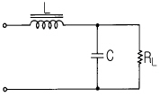
- 콘덴서 여파기
- π형 여파기
- LC 여파기
- 다단 LC 여파기
(정답률: 72%)
4. 전압 증폭도가 500배이면 데시벨 이득은 약 얼마인가?
- 45㏈
- 50㏈
- 54㏈
- 60㏈
(정답률: 45%)
5. 회로에서 TR의 VCE 가 0.1V로 포화될 때 β=40 이다. 입력에 전압 5V를 가할 때 RB 는 약 몇 kΩ 인가?
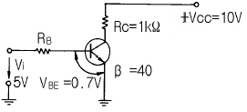
- 17.3
- 20.2
- 34.6
- 40.3
(정답률: 43%)
6. 피변조파전압 ν 가 다음과 같은 식으로 표시될 때 변조도 m을 구하면?
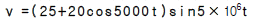
- 0.4
- 0.6
- 0.8
- 1.0
(정답률: 51%)
7. 피어스 BE 수정발진기는 컬렉터회로의 임피던스가 어떻게 될 때 가장 안정된 발진을 계속하는가?
- 유도성
- 용량성
- 저항성
- 공진점에서 무한대
(정답률: 56%)
8. 그림과 같은 회로에서 스위치를 지속적으로 on, off 시킬때 저항 R에 흐르는 전류파형은 그림 a와 같다. 그림 a의 파형에 대한 설명이 틀린 것은?
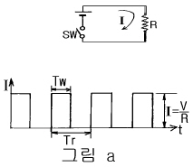
- Tw는 펄스폭이다.
- Ｉ는 펄스의 높이이다.
- t는 시상수이다.
- 1/(Tr)은 펄스의 반복 주파수이다.
(정답률: 54%)
9. 논리회로의 출력 Y에 대한 논리식으로 옳은 것은?
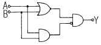
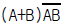
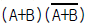
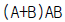
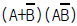
(정답률: 58%)
10. 마스터 슬리브 ＪK FF에서 클록펄스가 들어 올 때 마다 출력상태가 반전되는 것은?
- Ｊ=0, K=0
- Ｊ=1, K=0
- Ｊ=0, K=1
- Ｊ=1, K=1
(정답률: 68%)
11. 전자유도현상에 의하여 생기는 유도기전력의 크기를 정의 하는 법칙은?
- 렌쯔의 법칙
- 페러데이의 법칙
- 앙페에르의 법칙
- 맥스웰의 법칙
(정답률: 57%)
12. 재질과 두께가 같은 1㎌, 2㎌, 3㎌ 콘덴서 3개를 직렬 접속하고 전압을 서서히 증가시킬 경우에 대한 설명으로 옳은 것은?
- 1㎌의 콘덴서가 가장 먼저 절연이 파괴된다.
- 2㎌의 콘덴서가 가장 먼저 절연이 파괴된다.
- 3㎌의 콘덴서가 가장 먼저 절연이 파괴된다.
- 3개의 콘덴서가 동시에 절연이 파괴된다.
(정답률: 75%)
13. 우리나라 전압의 주파수는 몇 Hz 인가?
- 50
- 60
- 120
- 150
(정답률: 68%)
14. 트랜지스터의 베이스 폭을 얇게 하는 이유는 어느 특성을 좋게 하기 위함인가?
- 온도 특성
- 주파수 특성
- 잡음 특성
- 전도 특성
(정답률: 58%)
15. 그림과 같은 입력전압을 회로에 인가할 때 출력에는 어떤 전압이 나타나겠는가? (단, A는 연산증폭기이다.)
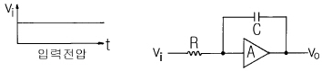
- 펄스전압
- 크기가 직선적으로 증가하는 전압
- 크기가 지수함수적으로 증가하는 전압
- 입력과 같은 전압
(정답률: 47%)
2과목: 전자계산기일반
16. 멀티 바이브레이터와 관계없는 설명은?
- 회로의 시정수로 주기가 결정된다.
- 파형에 고차의 고조파를 포함한다.
- 어느 주파수로 여진할 때 이것과 용이하게 동기된다.
- 부궤환의 일종이다.
(정답률: 50%)
17. 컴퓨터의 용량 1Mbyte를 이론적으로 나타낸 것은?
- 1000000byte
- 1024000byte
- 1038576byte
- 1048576byte
(정답률: 51%)
18. Hardware적 원인에 의한 인터럽트가 아닌 것은?
- 외부신호 인터럽트
- 기계착오 인터럽트
- 입曺출력 인터럽트
- SVC 인터럽트
(정답률: 40%)
19. 비수치적 연산 중에서 필요없는 일부의 bit 혹은 문자를 지워 버리고, 나머지 bit나 문자들만을 가지고 처리하기 위하여 사용되는 연산자는?
- OR
- EOR
- AND
- NOT
(정답률: 69%)
20. 다음 스위치 회로를 불 대수로 표현하면?
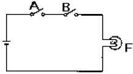
- F=A+B
- F=AㆍB'
- F=AㆍB
- F=A'ㆍB
(정답률: 74%)
21. 누산기(Accumulator)에 대한 가장 옳은 설명은?
- 논리 연산만을 수행한다.
- 연산 결과를 해석하는 곳이다.
- 산술 및 논리 연산을 수행한다.
- 연산 결과를 일시적으로 보관하는 레지스터의 일종이다.
(정답률: 68%)
22. 프로그램이 수행되는 도중 잘못된 프로그램을 정정하는 작업을 나타내는 단어는?
- 코딩(CODING)
- 펀칭(PUNCHING)
- 리마크(REMARK)
- 디버깅(DEBUGGING)
(정답률: 67%)
23. 다음 순서도 기호 중 산술연산, 데이터의 이동, 편집등의 처리(Process) 과정을 나타내는 것은?
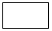
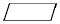
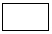
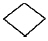
(정답률: 54%)
24. 전하가 방전되는 것을 보충하기 위한 리프레시 작업이 필요한 기억 소자는?
- mask ROM
- EPROM
- SRAM
- DRAM
(정답률: 64%)
25. 10진수 20(10)을 2진수로 변환하면?
- 11110(2)
- 10101(2)
- 10100(2)
- 00001(2)
(정답률: 76%)
26. 컴퓨터에서 프로그램 수행 중에 정전 등의 예기치 않은 사태가 발생했을 때 컴퓨터의 내부의 상태나 프로그램의 상태를 보존하기 위해 사용되는 것은?
- 인터럽트
- 서브루틴
- 스택
- 어드레싱
(정답률: 35%)
27. 기억된 프로그램의 명령을 하나씩 읽고 해독하여 각 장치에 필요한 지시를 하는 기능은?
- 기억 기능
- 연산 기능
- 제어 기능
- 입ㆍ출력 기능
(정답률: 78%)
28. 프로그램에서 자주 반복하여 사용되는 부분을 별도로 작성한 후 그 루틴이 필요할 때마다 호출하여 사용하는 것으로, 개방된 서브루틴이라고도 하는 것은?
- 매크로
- 레지스터
- 어셈블러
- 인터럽트
(정답률: 67%)
29. 측정조건이 나쁘거나 측정하는 사람의 주의력 부족에서 오는 오차는?
- 개인적 오차
- 통계적 오차
- 우연오차
- 백분율 오차
(정답률: 33%)
30. 그림과 같은 파형이 오실로스코프에 나타났을 때 두 신호의 위상차는?(단, A=1.414, B=1)
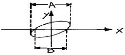
- 동위상
- 180°
- 90°
- 45°
(정답률: 62%)
3과목: 전자측정
31. 가동철편형 계기의 회전각 읨는?
- 전류에 비례한다.
- 전류에 반비례한다.
- 전류의 제곱에 비례한다.
- 전류의 제곱에 반비례한다.
(정답률: 55%)
32. 유도형 계기의 특징이 아닌 것은?
- 조정이 용이하다.
- 외부 자계의 영향이 적다.
- 구동 토크(torque)가 크다.
- 직류 적산 전력계로 사용된다.
(정답률: 37%)
33. 안테나의 급전선 임피던스(Zr)가 75[Ω ]이고, 여기에 특성 임피던스(Zo)가 50[Ω]인 필터를 연결한다면 반사 계수는 얼마인가?
- 0.1
- 0.2
- 0.4
- 0.75
(정답률: 52%)
34. 스미스 선도(Smith chart)는 다음 무엇을 구하는가?
- 반사 계수
- 파수(波數)
- 정규화 임피던스
- 전송선로의 특성 임피던스
(정답률: 39%)
35. 표준 신호 발생기의 구비 조건이 아닌 것은?
- 변조도가 자유롭게 조절될 수 있을 것
- 출력은 1개 주파수에 고정 되어 있을 것
- 누설 전류가 적고, 출력 임피던스가 일정할 것
- 주파수가 정확하고, 불필요한 출력을 내지 않을 것
(정답률: 60%)
36. 캘빈 더블 브리지로 저 저항을 측정할 수 있는 이유는?
- 저 저항과 비교될 수 있으므로
- 표준 저항과 비교될 수 있으므로
- 검류계의 감도가 매우 양호하므로
- 단자의 접촉 저항, 리드선 저항의 영향을 무시할 수 있으므로
(정답률: 40%)
37. 마이크로파에서 소전력(1[W]이하) 측정으로 전력 표준이 되는 계기는?
- 볼로미터 전력계
- C-C형 전력계
- C-M형 전력계
- 진공관 전력계
(정답률: 48%)
38. 디지털 신호를 아날로그 신호로 바꾸는 것을 무엇이라 하는가?
- A/D 변환
- 디지털 신호
- 아날로그 신호
- D/A 변환
(정답률: 79%)
39. 참값이 220[V]인 전압을 측정 하였더니, 242[V]가 측정되었다. 이 때 백분율 오차는?
- 8.8[%]
- 9.0[%]
- 9.2[%]
- 10.0[%]
(정답률: 56%)
40. 직류 전압을 측정할 때 측정 범위를 확대시키는 것은?(오류 신고가 접수된 문제입니다. 반드시 정답과 해설을 확인하시기 바랍니다.)
- 분압기
- 분류기
- 변압기
- 변류기
(정답률: 36%)
41. 고주파 유도로에서 도가니 용량의 10배 정도의 용량을 가진 콘덴서를 병렬로 넣어서 사용하는 이유는?
- 열효율 개선
- 역률 개선
- 감쇠 개선
- 발생주파수 개선
(정답률: 54%)
42. 60[㎐] 4극 3상 유도전동기의 동기속도는 ?
- 7200[rpm]
- 1800[rpm]
- 300[rpm]
- 2400[rpm]
(정답률: 66%)
43. 음파의 속도 V는? (단, 기체나 액체의 체적탄성율 K, 물질의 밀도 ρ 이다.)
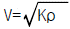
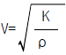
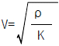
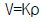
(정답률: 63%)
44. 초음파의 전파에 있어서 캐비테이션(cavitation)이란?
- 액체인 매질에서 기포의 생성과 소밀 현상
- 액체인 매질에서 기포의 생성과 횡파 현상
- 액체인 매질에서 종파에 의한 협대역 잡음
- 액체인 매질에서 횡파에 의한 광대역 잡음
(정답률: 53%)
45. 전자냉동은 다음 중 무슨 효과를 이용한 것인가?
- 제에백효과
- 톰슨효과
- 펠티어효과
- 주울효과
(정답률: 77%)
4과목: 전자기기 및 음향영상기기
46. 공기 중에 떠 있는 먼지나 가루를 제거하는 장치에 초음파 응용기기를 사용하는데, 이것은 초음파의 어느 작용을 응용한 것인가?
- 응집작용
- 캐비테이숀
- 확산작용
- 에멀션화작용
(정답률: 60%)
47. 섬유 제품의 염색에 주로 이용되는 초음파 작용은?
- 분산 작용
- 확산 작용
- 에멀션화 작용
- 응집 작용
(정답률: 49%)
48. 펄스레이다에서 전파를 발사하여 수신할 때까지 2.8[㎲]가 걸렸다면 목표물 까지의 거리는 몇[m]인가?
- 280
- 420
- 14
- 28
(정답률: 43%)
49. 궤환 제어계(feed back control)에서 공정제어 제어량에 해당하지 않는 것은?
- 습도
- 전압
- 압력
- 온도
(정답률: 48%)
50. 프로세스 제어에서 조절계의 제어동작과 관계없는 것은?
- 온, 오프 동작
- 비례위치 동작
- 미분, 적분 동작
- 변환 동작
(정답률: 45%)
51. 초음파를 이용하여 강물의 깊이를 측정하려고 한다. 반사파가 도달하기까지 0.5초 걸렸을 때 강물의 깊이는 몇 [m]인가? (단, 강물에서 초음파의 속도는 1400[m/sec] 이다.)
- 70[m]
- 230[m]
- 350[m]
- 700[m]
(정답률: 65%)
52. 선박이 A 무선표지국이 있는 항구에 입항하려고 할 때, 그 전파의 방향, 즉 진북에 대한 α 도의 방향을 추적함으로서, A 무선표지국이 있는 항구에 직선으로 도달하는 것을 무엇이라고 하는가?
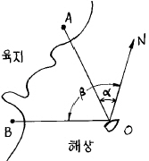
- 로오런(Loran)
- 데카(Decca)
- 호우밍(Homing)
- 센스결정(Sence determination)
(정답률: 65%)
53. 아래 그림은 태양 전지의 구조도이다. 음극단자가 연결된 A를 구성하는 물질로서 가장 적합한 것은?
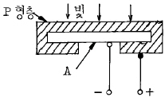
- 셀렌
- 철
- N형 실리콘판
- 붕소
(정답률: 75%)
54. 태양전지는 다음의 무슨 효과를 이용한 것인가?
- 광전자 방출효과
- 광전도 효과
- 광증폭 효과
- 광기전력 효과
(정답률: 74%)
55. FM 수신기의 고주파 증폭에 전계효과 트랜지스터가 사용되는 주된 이유는?
- 입력 임피던스가 높기 때문에
- 증폭률이 높기 때문에
- 고주파 특성이 우수하기 때문에
- 회로 설계가 용이하기 때문에
(정답률: 40%)
56. 천연색 수상기의 협대역 방식 구성도에서 빈 부분에 들어갈 내용은?
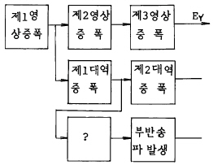
- 영상 출력
- 버어스트 증폭
- x축 복조
- 수정 휠터
(정답률: 60%)
57. 스피이커의 감도 측정에 있어서 표준 마이크로폰이 받는 음압이 4[μ bar]이면 스피이커의 전력 감도는 얼마 정도인가? (단, 스피이커의 입력에는 1[W]를 가한 것으로 한다.)
- 9[dB]
- 12[dB]
- 16[dB]
- 20[dB]
(정답률: 50%)
58. 자기 녹음기에서 재생헤드의 위치가 정상보다 비스듬히 놓여져 있을때 나타나는 증상은?
- 저음역이 크게 감쇄된다.
- 중음역이 감쇄된다.
- 고음역이 크게 감쇄된다.
- 전반적으로 음량이 줄어든다.
(정답률: 52%)
59. 셀렌에 빛을 쬐면 기전력이 발생하게 되는데, 이 원리를 이용하여 만든 계기는?
- 조도계
- 체온계
- 압축계
- 풍속계
(정답률: 74%)
60. 제어계의 출력신호와 입력신호와의 비를 무엇이라 하는가?
- 전달함수
- 제어함수
- 적분함수
- 미분함수
(정답률: 50%)